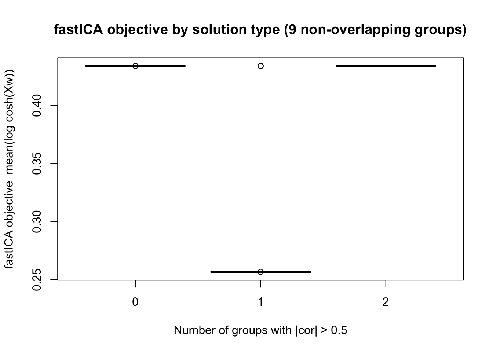
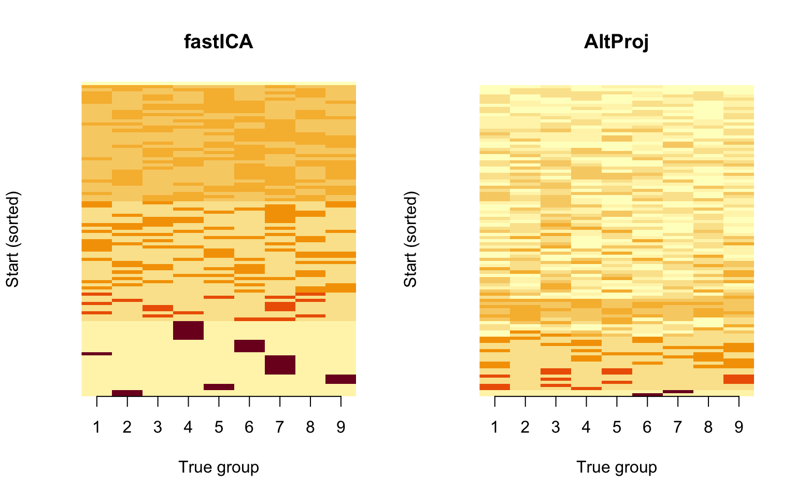
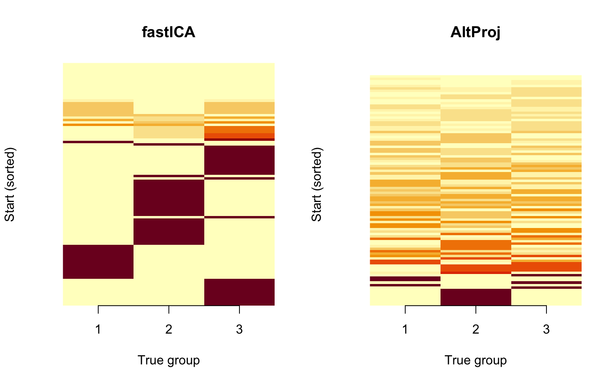

Last updated: 2026-08-15
Checks: 7 0
Knit directory: misc/analysis/
This reproducible R Markdown analysis was created with workflowr (version 1.7.2). The Checks tab describes the reproducibility checks that were applied when the results were created. The Past versions tab lists the development history.
Great! Since the R Markdown file has been committed to the Git repository, you know the exact version of the code that produced these results.
Great job! The global environment was empty. Objects defined in the global environment can affect the analysis in your R Markdown file in unknown ways. For reproduciblity it’s best to always run the code in an empty environment.
The command set.seed(1) was run prior to running the code in the R Markdown file. Setting a seed ensures that any results that rely on randomness, e.g. subsampling or permutations, are reproducible.
Great job! Recording the operating system, R version, and package versions is critical for reproducibility.
Nice! There were no cached chunks for this analysis, so you can be confident that you successfully produced the results during this run.
Great job! Using relative paths to the files within your workflowr project makes it easier to run your code on other machines.
Great! You are using Git for version control. Tracking code development and connecting the code version to the results is critical for reproducibility.
The results in this page were generated with repository version 22eead5. See the Past versions tab to see a history of the changes made to the R Markdown and HTML files.
Note that you need to be careful to ensure that all relevant files for the analysis have been committed to Git prior to generating the results (you can use wflow_publish or wflow_git_commit). workflowr only checks the R Markdown file, but you know if there are other scripts or data files that it depends on. Below is the status of the Git repository when the results were generated:
Ignored files:
Ignored: .DS_Store
Ignored: .Rhistory
Ignored: .Rproj.user/
Ignored: .claude/
Ignored: GSE87571/
Ignored: analysis/.RData
Ignored: analysis/.Rhistory
Ignored: analysis/ALStruct_cache/
Ignored: analysis/binary_quad_comparison_cache/
Ignored: analysis/ebproj_01.html
Ignored: analysis/figure/
Ignored: analysis/gset_G63_cache/
Ignored: data/.Rhistory
Ignored: data/methylation-data-for-matthew.rds
Ignored: data/pbmc/
Ignored: data/pbmc_purified.RData
Untracked files:
Untracked: .dropbox
Untracked: GSE41037/
Untracked: Icon
Untracked: Rplots.pdf
Untracked: analysis/GHstan.Rmd
Untracked: analysis/GTEX-cogaps.Rmd
Untracked: analysis/PACS.Rmd
Untracked: analysis/Rplot.png
Untracked: analysis/SPCAvRP.rmd
Untracked: analysis/abf_comparisons.Rmd
Untracked: analysis/admm_02.Rmd
Untracked: analysis/admm_03.Rmd
Untracked: analysis/binary_quad_comparison.Rmd
Untracked: analysis/bispca.Rmd
Untracked: analysis/cache/
Untracked: analysis/cholesky.Rmd
Untracked: analysis/compare-transformed-models.Rmd
Untracked: analysis/cormotif.Rmd
Untracked: analysis/cp_ash.Rmd
Untracked: analysis/eQTL.perm.rand.pdf
Untracked: analysis/eb_power2.Rmd
Untracked: analysis/eb_prepilot.Rmd
Untracked: analysis/eb_var.Rmd
Untracked: analysis/ebpmf1.Rmd
Untracked: analysis/ebpmf_sla_text.Rmd
Untracked: analysis/ebproj_01.Rmd
Untracked: analysis/ebproj_newton.Rmd
Untracked: analysis/ebspca_sims.Rmd
Untracked: analysis/explore_psvd.Rmd
Untracked: analysis/fa_check_identify.Rmd
Untracked: analysis/fa_iterative.Rmd
Untracked: analysis/fastica_heated.Rmd
Untracked: analysis/fastica_unwhitened.Rmd
Untracked: analysis/flash_cov_overlapping_groups_init.Rmd
Untracked: analysis/flash_test_tree.Rmd
Untracked: analysis/flashier_newgroups.Rmd
Untracked: analysis/flashier_nmf_triples.Rmd
Untracked: analysis/flashier_pbmc.Rmd
Untracked: analysis/flashier_snn_shifted_prior.Rmd
Untracked: analysis/greedy_ebpmf_exploration_00.Rmd
Untracked: analysis/gset_G63.Rmd
Untracked: analysis/ieQTL.perm.rand.pdf
Untracked: analysis/lasso_em_03.Rmd
Untracked: analysis/m6amash.Rmd
Untracked: analysis/mash_bhat_z.Rmd
Untracked: analysis/mash_ieqtl_permutations.Rmd
Untracked: analysis/matrix_beta.Rmd
Untracked: analysis/meth_flash_01.Rmd
Untracked: analysis/methylation_example.Rmd
Untracked: analysis/mixsqp.Rmd
Untracked: analysis/mr.ash_lasso_init.Rmd
Untracked: analysis/mr.mash.test.Rmd
Untracked: analysis/mr_ash_modular.Rmd
Untracked: analysis/mr_ash_parameterization.Rmd
Untracked: analysis/mr_ash_ridge.Rmd
Untracked: analysis/mv_gaussian_message_passing.Rmd
Untracked: analysis/nejm.Rmd
Untracked: analysis/nmf_bg.Rmd
Untracked: analysis/nonneg_underapprox.Rmd
Untracked: analysis/normal_conditional_on_r2.Rmd
Untracked: analysis/normalize.Rmd
Untracked: analysis/pbmc.Rmd
Untracked: analysis/pca_binary_weighted.Rmd
Untracked: analysis/pca_l1.Rmd
Untracked: analysis/poisson_nmf_approx.Rmd
Untracked: analysis/poisson_shrink.Rmd
Untracked: analysis/poisson_transform.Rmd
Untracked: analysis/qrnotes.txt
Untracked: analysis/ridge_iterative_02.Rmd
Untracked: analysis/ridge_iterative_splitting.Rmd
Untracked: analysis/samps/
Untracked: analysis/sc_bimodal.Rmd
Untracked: analysis/shrinkage_comparisons_changepoints.Rmd
Untracked: analysis/susie_cov.Rmd
Untracked: analysis/susie_en.Rmd
Untracked: analysis/susie_z_investigate.Rmd
Untracked: analysis/svd-timing.Rmd
Untracked: analysis/temp.RDS
Untracked: analysis/temp.Rmd
Untracked: analysis/test-figure/
Untracked: analysis/test.Rmd
Untracked: analysis/test.Rpres
Untracked: analysis/test.md
Untracked: analysis/test_qr.R
Untracked: analysis/test_sparse.Rmd
Untracked: analysis/tree_dist_top_eigenvector.Rmd
Untracked: analysis/z.txt
Untracked: code/coordinate_descent_symNMF.R
Untracked: code/multivariate_testfuncs.R
Untracked: code/rqb.hacked.R
Untracked: data/4matthew/
Untracked: data/4matthew2/
Untracked: data/E-MTAB-2805.processed.1/
Untracked: data/ENSG00000156738.Sim_Y2.RDS
Untracked: data/G63
Untracked: data/GDS5363_full.soft.gz
Untracked: data/GSE41265_allGenesTPM.txt
Untracked: data/Muscle_Skeletal.ACTN3.pm1Mb.RDS
Untracked: data/P.rds
Untracked: data/Thyroid.FMO2.pm1Mb.RDS
Untracked: data/bmass.HaemgenRBC2016.MAF01.Vs2.MergedDataSources.200kRanSubset.ChrBPMAFMarkerZScores.vs1.txt.gz
Untracked: data/bmass.HaemgenRBC2016.Vs2.NewSNPs.ZScores.hclust.vs1.txt
Untracked: data/bmass.HaemgenRBC2016.Vs2.PreviousSNPs.ZScores.hclust.vs1.txt
Untracked: data/eb_prepilot/
Untracked: data/finemap_data/fmo2.sim/b.txt
Untracked: data/finemap_data/fmo2.sim/dap_out.txt
Untracked: data/finemap_data/fmo2.sim/dap_out2.txt
Untracked: data/finemap_data/fmo2.sim/dap_out2_snp.txt
Untracked: data/finemap_data/fmo2.sim/dap_out_snp.txt
Untracked: data/finemap_data/fmo2.sim/data
Untracked: data/finemap_data/fmo2.sim/fmo2.sim.config
Untracked: data/finemap_data/fmo2.sim/fmo2.sim.k
Untracked: data/finemap_data/fmo2.sim/fmo2.sim.k4.config
Untracked: data/finemap_data/fmo2.sim/fmo2.sim.k4.snp
Untracked: data/finemap_data/fmo2.sim/fmo2.sim.ld
Untracked: data/finemap_data/fmo2.sim/fmo2.sim.snp
Untracked: data/finemap_data/fmo2.sim/fmo2.sim.z
Untracked: data/finemap_data/fmo2.sim/pos.txt
Untracked: data/logm.csv
Untracked: data/m.cd.RDS
Untracked: data/m.cdu.old.RDS
Untracked: data/m.new.cd.RDS
Untracked: data/m.old.cd.RDS
Untracked: data/mainbib.bib.old
Untracked: data/mat.csv
Untracked: data/mat.txt
Untracked: data/mat_new.csv
Untracked: data/matrix_lik.rds
Untracked: data/paintor_data/
Untracked: data/running_data_chris.csv
Untracked: data/running_data_matthew.csv
Untracked: data/temp.txt
Untracked: data/y.txt
Untracked: data/y_f.txt
Untracked: data/zscore_jointLCLs_m6AQTLs_susie_eQTLpruned.rds
Untracked: data/zscore_jointLCLs_random.rds
Untracked: explore_udi.R
Untracked: output/fit.k10.rds
Untracked: output/fit.nn.pbmc.purified.rds
Untracked: output/fit.nn.rds
Untracked: output/fit.nn.s.001.rds
Untracked: output/fit.nn.s.01.rds
Untracked: output/fit.nn.s.1.rds
Untracked: output/fit.nn.s.10.rds
Untracked: output/fit.snn.s.001.rds
Untracked: output/fit.snn.s.01.nninit.rds
Untracked: output/fit.snn.s.01.rds
Untracked: output/fit.varbvs.RDS
Untracked: output/fit2.nn.pbmc.purified.rds
Untracked: output/glmnet.fit.RDS
Untracked: output/snn07.txt
Untracked: output/snn34.txt
Untracked: output/test.bv.txt
Untracked: output/test.gamma.txt
Untracked: output/test.hyp.txt
Untracked: output/test.log.txt
Untracked: output/test.param.txt
Untracked: output/test2.bv.txt
Untracked: output/test2.gamma.txt
Untracked: output/test2.hyp.txt
Untracked: output/test2.log.txt
Untracked: output/test2.param.txt
Untracked: output/test3.bv.txt
Untracked: output/test3.gamma.txt
Untracked: output/test3.hyp.txt
Untracked: output/test3.log.txt
Untracked: output/test3.param.txt
Untracked: output/test4.bv.txt
Untracked: output/test4.gamma.txt
Untracked: output/test4.hyp.txt
Untracked: output/test4.log.txt
Untracked: output/test4.param.txt
Untracked: output/test5.bv.txt
Untracked: output/test5.gamma.txt
Untracked: output/test5.hyp.txt
Untracked: output/test5.log.txt
Untracked: output/test5.param.txt
Unstaged changes:
Modified: .gitignore
Modified: analysis/eb_snmu.Rmd
Modified: analysis/ebnm_binormal.Rmd
Modified: analysis/ebpower.Rmd
Modified: analysis/fastica_asymmetric_03.Rmd
Modified: analysis/fastica_bm_spd.Rmd
Modified: analysis/flashier_log1p.Rmd
Modified: analysis/flashier_sla_text.Rmd
Modified: analysis/logistic_z_scores.Rmd
Modified: analysis/mr_ash_pen.Rmd
Modified: analysis/nmu_em.Rmd
Modified: analysis/susie_flash.Rmd
Modified: analysis/tap_free_energy.Rmd
Modified: misc.Rproj
Note that any generated files, e.g. HTML, png, CSS, etc., are not included in this status report because it is ok for generated content to have uncommitted changes.
These are the previous versions of the repository in which changes were made to the R Markdown (analysis/compare_fastica_altproj.Rmd) and HTML (docs/compare_fastica_altproj.html) files. If you’ve configured a remote Git repository (see ?wflow_git_remote), click on the hyperlinks in the table below to view the files as they were in that past version.
| File | Version | Author | Date | Message |
|---|---|---|---|---|
| Rmd | 22eead5 | Matthew Stephens | 2026-08-15 | Update comparison table: fix vPv floating point tolerance, add p |
| html | c43e3ef | Matthew Stephens | 2026-08-15 | Build site. |
| Rmd | e4ed94f | Matthew Stephens | 2026-08-15 | Add fastICA vs alternating projection comparison |
We compare two approaches for finding binary group structure in whitened data:
Non-centered fastICA (from fastica_centered_02.Rmd): maximizes the log-cosh objective over unit-norm weight vectors on whitened data with a row of 1s prepended as an intercept.
Alternating projection: iteratively projects a binary vector onto the subspace spanned by the data, then rounds back to ±1. Specifically, each update is v <- sign(U %*% (t(U) %*% v)) where U has orthonormal columns spanning the data subspace.
Both methods receive the same preprocessed data: centered and whitened X1 with a row of 1s prepended to form X1_aug. For the alternating projection, U = t(X1_aug) / sqrt(n), which has orthonormal columns because X1_aug %*% t(X1_aug) = n * I (whitening plus centering makes the intercept row orthogonal to all whitened rows).
For each simulation setting (taken from fastica_centered_02.Rmd) we run each method from 100 random starting points and report the fraction of starts that produce a solution correlating >0.95 with at least one true group column.
# X is (n.comp+1) x n. W is (n.comp+1) x n_starts (one weight vector per column).
# P = t(X) %*% W is n x n_starts (source estimates).
fastica_update = function(X, W) {
P <- t(X) %*% W # n x n_starts: source estimates
G <- tanh(P)
G2 <- 1 - G^2
W <- X %*% G - sweep(W, 2, colSums(G2), "*")
sweep(W, 2, sqrt(colSums(W^2)), "/")
}
# X is (n.comp+1) x n. V is n x n_starts (one binary vector per column).
# P = X %*% V / n is (n.comp+1) x n_starts (subspace coefficients).
alt_proj_update = function(X, V) {
n <- ncol(X)
P <- X %*% V / n # (n.comp+1) x n_starts: subspace coefficients
V <- sign(t(X) %*% P) # n x n_starts: project back and round
V[V == 0] <- 1L
V
}
# Center columns of X, whiten to n.comp dimensions.
preprocess = function(X, n.comp = 10) {
X <- scale(X, scale = FALSE)
sqrt(nrow(X)) * t(svd(X)$u[, 1:n.comp])
}max_cor_with_truth = function(v, L) max(abs(cor(v, L)))
vPv_scores = function(X1_aug, V) {
# v'Pv = ||X1_aug v||^2 / n for each column of V (binary +-1 vectors)
colSums((X1_aug %*% V)^2) / ncol(X1_aug)
}
run_fastica = function(X1_aug, L, n_starts = 100, n_iter = 50) {
set.seed(1)
W <- matrix(rnorm(nrow(X1_aug) * n_starts), nrow(X1_aug), n_starts)
W <- sweep(W, 2, sqrt(colSums(W^2)), "/")
for (i in seq_len(n_iter))
W <- fastica_update(X1_aug, W)
Lhat <- t(X1_aug) %*% W # n x n_starts
V <- sign(Lhat); V[V == 0] <- 1L
max_cors <- apply(V, 2, max_cor_with_truth, L = L)
list(max_cors = max_cors, vPv = vPv_scores(X1_aug, V))
}
run_alt_proj = function(X1_aug, L, n_starts = 100, n_iter = 50) {
n <- ncol(X1_aug)
set.seed(1)
V <- sign(matrix(rnorm(n * n_starts), n, n_starts))
V[V == 0] <- 1L
for (i in seq_len(n_iter))
V <- alt_proj_update(X1_aug, V)
max_cors <- apply(V, 2, max_cor_with_truth, L = L)
list(max_cors = max_cors, vPv = vPv_scores(X1_aug, V))
}
run_comparison = function(X, L, n.comp, label, n_starts = 100, n_iter = 50) {
X1 <- preprocess(X, n.comp = n.comp)
X1_aug <- rbind(rep(1, ncol(X1)), X1)
# Convert each L column to +-1 by thresholding at the column mean
L_bin <- apply(L, 2, function(col) { v <- sign(col - mean(col)); v[v == 0] <- 1L; v })
true_vPv <- min(vPv_scores(X1_aug, L_bin))
cat("Running fastICA for:", label, "\n")
ica_time <- system.time(ica <- run_fastica(X1_aug, L, n_starts = n_starts, n_iter = n_iter))
cat("Running alt-proj for:", label, "\n")
ap_time <- system.time(ap <- run_alt_proj(X1_aug, L, n_starts = n_starts, n_iter = n_iter))
ica_approx <- mean(ica$max_cors > 0.95, na.rm = TRUE)
ica_exact <- mean(ica$max_cors > 0.99, na.rm = TRUE)
ap_approx <- mean(ap$max_cors > 0.95, na.rm = TRUE)
ap_exact <- mean(ap$max_cors > 0.99, na.rm = TRUE)
ica_beat <- mean(ica$vPv >= true_vPv - 1e-10)
ap_beat <- mean(ap$vPv >= true_vPv - 1e-10)
cat(sprintf(" fastICA: approx=%.0f%% exact=%.0f%% beat=%.0f%% AltProj: approx=%.0f%% exact=%.0f%% beat=%.0f%%\n",
100*ica_approx, 100*ica_exact, 100*ica_beat,
100*ap_approx, 100*ap_exact, 100*ap_beat))
c(fastICA_approx = ica_approx, fastICA_exact = ica_exact,
fastICA_ms = 1000 * ica_time[["elapsed"]], fastICA_beat = ica_beat,
AltProj_approx = ap_approx, AltProj_exact = ap_exact,
AltProj_ms = 1000 * ap_time[["elapsed"]], AltProj_beat = ap_beat,
true_vPv = true_vPv)
}Three groups, 20 members each out of n=100; groups may overlap. Background is -1, group members are +1.
K <- 3; p <- 1000; n <- 100
set.seed(1)
L <- matrix(-1, nrow = n, ncol = K)
for (i in 1:K) { L[sample(1:n, 20), i] <- 1 }
FF <- matrix(rnorm(p * K), nrow = p, ncol = K)
X <- L %*% t(FF) + rnorm(n * p, 0, 0.01)
res1 <- run_comparison(X, L, n.comp = 10, label = "3 overlapping groups (n=100, K=3)")Running fastICA for: 3 overlapping groups (n=100, K=3) Warning in cor(v, L): the standard deviation is zero
Warning in cor(v, L): the standard deviation is zero
Warning in cor(v, L): the standard deviation is zero
Warning in cor(v, L): the standard deviation is zero
Warning in cor(v, L): the standard deviation is zero
Warning in cor(v, L): the standard deviation is zero
Warning in cor(v, L): the standard deviation is zero
Warning in cor(v, L): the standard deviation is zero
Warning in cor(v, L): the standard deviation is zero
Warning in cor(v, L): the standard deviation is zero
Warning in cor(v, L): the standard deviation is zero
Warning in cor(v, L): the standard deviation is zero
Warning in cor(v, L): the standard deviation is zero
Warning in cor(v, L): the standard deviation is zero
Warning in cor(v, L): the standard deviation is zeroRunning alt-proj for: 3 overlapping groups (n=100, K=3) Warning in cor(v, L): the standard deviation is zero
Warning in cor(v, L): the standard deviation is zero
Warning in cor(v, L): the standard deviation is zero
Warning in cor(v, L): the standard deviation is zero
Warning in cor(v, L): the standard deviation is zero fastICA: approx=42% exact=42% beat=51% AltProj: approx=14% exact=14% beat=18%Nine groups, 20 members each out of n=100. Background is 0, group members are +1.
K <- 9; p <- 1000; n <- 100
set.seed(1)
L <- matrix(0, nrow = n, ncol = K)
for (i in 1:K) { L[sample(1:n, 20), i] <- 1 }
FF <- matrix(rnorm(p * K), nrow = p, ncol = K)
X <- L %*% t(FF) + rnorm(n * p, 0, 0.01)
res2 <- run_comparison(X, L, n.comp = 10, label = "9 overlapping groups (n=100, K=9)")Running fastICA for: 9 overlapping groups (n=100, K=9) Warning in cor(v, L): the standard deviation is zero
Warning in cor(v, L): the standard deviation is zero
Warning in cor(v, L): the standard deviation is zero
Warning in cor(v, L): the standard deviation is zero
Warning in cor(v, L): the standard deviation is zero
Warning in cor(v, L): the standard deviation is zeroRunning alt-proj for: 9 overlapping groups (n=100, K=9)
fastICA: approx=73% exact=73% beat=75% AltProj: approx=17% exact=17% beat=17%Four equal non-overlapping groups of 25 (n=100). Using n.comp=10.
n <- 100; p <- 1000
set.seed(1)
L <- matrix(0, nrow = n, ncol = 4)
L[1:25, 1] <- 1
L[26:50, 2] <- 1
L[51:75, 3] <- 1
L[76:100, 4] <- 1
FF <- matrix(rnorm(p * 4), nrow = p)
X <- L %*% t(FF) + rnorm(n * p, 0, 0.01)
res3 <- run_comparison(X, L, n.comp = 10, label = "4 non-overlapping groups (n=100)")Running fastICA for: 4 non-overlapping groups (n=100) Warning in cor(v, L): the standard deviation is zero
Warning in cor(v, L): the standard deviation is zero
Warning in cor(v, L): the standard deviation is zero
Warning in cor(v, L): the standard deviation is zero
Warning in cor(v, L): the standard deviation is zero
Warning in cor(v, L): the standard deviation is zero
Warning in cor(v, L): the standard deviation is zero
Warning in cor(v, L): the standard deviation is zero
Warning in cor(v, L): the standard deviation is zero
Warning in cor(v, L): the standard deviation is zero
Warning in cor(v, L): the standard deviation is zero
Warning in cor(v, L): the standard deviation is zero
Warning in cor(v, L): the standard deviation is zero
Warning in cor(v, L): the standard deviation is zero
Warning in cor(v, L): the standard deviation is zero
Warning in cor(v, L): the standard deviation is zeroRunning alt-proj for: 4 non-overlapping groups (n=100) Warning in cor(v, L): the standard deviation is zero
Warning in cor(v, L): the standard deviation is zero
Warning in cor(v, L): the standard deviation is zero fastICA: approx=49% exact=49% beat=57% AltProj: approx=9% exact=9% beat=12%Nine equal non-overlapping groups of 25 (n=225). Using n.comp=20.
n <- 225; p <- 1000
set.seed(1)
L <- matrix(0, nrow = n, ncol = 9)
for (i in 1:9) { L[((i - 1) * 25 + 1):(i * 25), i] <- 1 }
FF <- matrix(rnorm(p * 9), nrow = p)
X <- L %*% t(FF) + rnorm(n * p, 0, 0.01)
res4 <- run_comparison(X, L, n.comp = 20, label = "9 non-overlapping groups (n=225)")Running fastICA for: 9 non-overlapping groups (n=225) Warning in cor(v, L): the standard deviation is zeroRunning alt-proj for: 9 non-overlapping groups (n=225) Warning in cor(v, L): the standard deviation is zero fastICA: approx=3% exact=3% beat=4% AltProj: approx=2% exact=2% beat=3%A 4-leaf bifurcating tree with 6 binary branches (n=100). Using n.comp=10 (fewer PCs reduces noise, as found in fastica_centered_02.Rmd).
n <- 100; p <- 1000
set.seed(1)
L <- matrix(0, nrow = n, ncol = 6)
L[1:50, 1] <- 1
L[51:100, 2] <- 1
L[1:25, 3] <- 1
L[26:50, 4] <- 1
L[51:75, 5] <- 1
L[76:100, 6] <- 1
FF <- matrix(rnorm(p * 6), nrow = p)
X <- L %*% t(FF) + rnorm(n * p, 0, 0.01)
res5 <- run_comparison(X, L, n.comp = 10, label = "Bifurcating tree (n=100, 6 branches)")Running fastICA for: Bifurcating tree (n=100, 6 branches) Warning in cor(v, L): the standard deviation is zero
Warning in cor(v, L): the standard deviation is zero
Warning in cor(v, L): the standard deviation is zero
Warning in cor(v, L): the standard deviation is zero
Warning in cor(v, L): the standard deviation is zero
Warning in cor(v, L): the standard deviation is zero
Warning in cor(v, L): the standard deviation is zero
Warning in cor(v, L): the standard deviation is zero
Warning in cor(v, L): the standard deviation is zero
Warning in cor(v, L): the standard deviation is zeroRunning alt-proj for: Bifurcating tree (n=100, 6 branches) Warning in cor(v, L): the standard deviation is zero
Warning in cor(v, L): the standard deviation is zero
Warning in cor(v, L): the standard deviation is zero
Warning in cor(v, L): the standard deviation is zero
Warning in cor(v, L): the standard deviation is zero fastICA: approx=70% exact=70% beat=73% AltProj: approx=12% exact=12% beat=16%Is alternating projection finding combinations of multiple groups rather than single groups? We re-run both methods on sim 4, store all 100 result vectors, and examine the absolute correlation of each result with each of the 9 true group columns.
n <- 225; p <- 1000; n_starts <- 100; n_iter <- 50
set.seed(1)
L9 <- matrix(0, nrow = n, ncol = 9)
for (i in 1:9) L9[((i-1)*25+1):(i*25), i] <- 1
FF <- matrix(rnorm(p * 9), nrow = p)
X9 <- L9 %*% t(FF) + rnorm(n * p, 0, 0.01)
X1 <- preprocess(X9, n.comp = 20)
X1_aug <- rbind(rep(1, ncol(X1)), X1)
# fastICA: store all weight vectors
set.seed(1)
W <- matrix(rnorm(nrow(X1_aug) * n_starts), nrow(X1_aug), n_starts)
W <- sweep(W, 2, sqrt(colSums(W^2)), "/")
for (i in seq_len(n_iter)) W <- fastica_update(X1_aug, W)
Lhat_ica <- t(X1_aug) %*% W # n x n_starts
# alt_proj: store all binary vectors
set.seed(1)
V <- sign(matrix(rnorm(n * n_starts), n, n_starts))
V[V == 0] <- 1L
for (i in seq_len(n_iter)) V <- alt_proj_update(X1_aug, V)
Lhat_ap <- V # n x n_starts
# Absolute correlation of each result with each true group: n_starts x 9
cor_ica <- abs(cor(Lhat_ica, L9))
cor_ap <- abs(cor(Lhat_ap, L9))Warning in cor(Lhat_ap, L9): the standard deviation is zeroFor each start, we look at how many groups it correlates with above 0.5 — a single-group solution scores 1, a combination scores 2 or more.
n_groups_hit = function(cor_mat, thresh = 0.5) rowSums(cor_mat > thresh)
tab_ica <- table(n_groups_hit(cor_ica))
tab_ap <- table(n_groups_hit(cor_ap))
cat("fastICA — number of groups with |cor| > 0.5:\n"); print(tab_ica)fastICA <U+2014> number of groups with |cor| > 0.5:
0 1 2
67 24 9 cat("AltProj — number of groups with |cor| > 0.5:\n"); print(tab_ap)AltProj <U+2014> number of groups with |cor| > 0.5:
0 1 2 3
82 2 12 3 We can also check whether the fastICA objective is higher for single-group solutions than for combos, using the weight vectors W already computed.
# fastICA objective for each start
P <- t(X1_aug) %*% W # n x n_starts
obj_ica <- colMeans(log(cosh(P)))
n_hit <- n_groups_hit(cor_ica)
boxplot(obj_ica ~ n_hit,
xlab = "Number of groups with |cor| > 0.5",
ylab = "fastICA objective mean(log cosh(Xw))",
main = "fastICA objective by solution type (9 non-overlapping groups)")
| Version | Author | Date |
|---|---|---|
| c43e3ef | Matthew Stephens | 2026-08-15 |
Heatmap of absolute correlations for each start (rows = starts sorted by best single-group correlation, columns = true groups):
par(mfrow = c(1, 2))
order_ica <- order(apply(cor_ica, 1, max), decreasing = TRUE)
image(t(cor_ica[order_ica, ]), zlim = c(0, 1), axes = FALSE,
main = "fastICA", xlab = "True group", ylab = "Start (sorted)")
axis(1, at = seq(0, 1, length.out = 9), labels = 1:9)
order_ap <- order(apply(cor_ap, 1, max), decreasing = TRUE)
image(t(cor_ap[order_ap, ]), zlim = c(0, 1), axes = FALSE,
main = "AltProj", xlab = "True group", ylab = "Start (sorted)")
axis(1, at = seq(0, 1, length.out = 9), labels = 1:9)
| Version | Author | Date |
|---|---|---|
| c43e3ef | Matthew Stephens | 2026-08-15 |
par(mfrow = c(1, 1))AltProj achieves a higher mean v’Pv than fastICA in this setting despite a much lower success rate, suggesting it is finding high-energy binary vectors that do not isolate single groups.
K <- 3; p <- 1000; n <- 100; n_starts <- 100; n_iter <- 50
set.seed(1)
L3 <- matrix(-1, nrow = n, ncol = K)
for (i in 1:K) L3[sample(1:n, 20), i] <- 1
FF <- matrix(rnorm(p * K), nrow = p, ncol = K)
X3 <- L3 %*% t(FF) + rnorm(n * p, 0, 0.01)
X1 <- preprocess(X3, n.comp = 10)
X1_aug <- rbind(rep(1, ncol(X1)), X1)
# fastICA
set.seed(1)
W <- matrix(rnorm(nrow(X1_aug) * n_starts), nrow(X1_aug), n_starts)
W <- sweep(W, 2, sqrt(colSums(W^2)), "/")
for (i in seq_len(n_iter)) W <- fastica_update(X1_aug, W)
Lhat_ica <- t(X1_aug) %*% W
# alt_proj
set.seed(1)
V <- sign(matrix(rnorm(n * n_starts), n, n_starts))
V[V == 0] <- 1L
for (i in seq_len(n_iter)) V <- alt_proj_update(X1_aug, V)
Lhat_ap <- V
cor_ica <- abs(cor(Lhat_ica, L3)) # n_starts x 3
cor_ap <- abs(cor(Lhat_ap, L3))Warning in cor(Lhat_ap, L3): the standard deviation is zeropar(mfrow = c(1, 2))
order_ica <- order(apply(cor_ica, 1, max), decreasing = TRUE)
image(t(cor_ica[order_ica, ]), zlim = c(0, 1), axes = FALSE,
main = "fastICA", xlab = "True group", ylab = "Start (sorted)")
axis(1, at = seq(0, 1, length.out = 3), labels = 1:3)
order_ap <- order(apply(cor_ap, 1, max), decreasing = TRUE)
image(t(cor_ap[order_ap, ]), zlim = c(0, 1), axes = FALSE,
main = "AltProj", xlab = "True group", ylab = "Start (sorted)")
axis(1, at = seq(0, 1, length.out = 3), labels = 1:3)
par(mfrow = c(1, 1))results <- data.frame(
Simulation = c(
"3 overlapping groups (n=100)",
"9 overlapping groups (n=100)",
"4 non-overlapping groups (n=100)",
"9 non-overlapping groups (n=225)",
"Bifurcating tree (n=100, 6 branches)"
),
n.comp = c(10, 10, 10, 20, 10),
p = c("0.20", "0.20", "0.25", "0.11", "0.25-0.50"),
fastICA_approx = round(100 * c(res1["fastICA_approx"], res2["fastICA_approx"], res3["fastICA_approx"],
res4["fastICA_approx"], res5["fastICA_approx"])),
AltProj_approx = round(100 * c(res1["AltProj_approx"], res2["AltProj_approx"], res3["AltProj_approx"],
res4["AltProj_approx"], res5["AltProj_approx"])),
fastICA_exact = round(100 * c(res1["fastICA_exact"], res2["fastICA_exact"], res3["fastICA_exact"],
res4["fastICA_exact"], res5["fastICA_exact"])),
AltProj_exact = round(100 * c(res1["AltProj_exact"], res2["AltProj_exact"], res3["AltProj_exact"],
res4["AltProj_exact"], res5["AltProj_exact"])),
fastICA_ms = round(c(res1["fastICA_ms"], res2["fastICA_ms"],
res3["fastICA_ms"], res4["fastICA_ms"], res5["fastICA_ms"])),
AltProj_ms = round(c(res1["AltProj_ms"], res2["AltProj_ms"],
res3["AltProj_ms"], res4["AltProj_ms"], res5["AltProj_ms"])),
fastICA_beat = round(100 * c(res1["fastICA_beat"], res2["fastICA_beat"], res3["fastICA_beat"],
res4["fastICA_beat"], res5["fastICA_beat"])),
AltProj_beat = round(100 * c(res1["AltProj_beat"], res2["AltProj_beat"], res3["AltProj_beat"],
res4["AltProj_beat"], res5["AltProj_beat"])),
true_vPv = round(c(res1["true_vPv"], res2["true_vPv"], res3["true_vPv"],
res4["true_vPv"], res5["true_vPv"]), 4)
)
knitr::kable(results,
col.names = c("Simulation", "n.comp", "p",
"ICA >0.95", "AP >0.95", "ICA >0.99", "AP >0.99",
"ICA (ms)", "AP (ms)", "ICA % ≥ truth v'Pv", "AP % ≥ truth v'Pv",
"True min v'Pv"),
caption = "Per-start success rates at two correlation thresholds (>0.95 and >0.99 with any true group), wall-clock time, and fraction of starts whose binarized v'Pv meets or exceeds the minimum true group v'Pv."
)| Simulation | n.comp | p | ICA >0.95 | AP >0.95 | ICA >0.99 | AP >0.99 | ICA (ms) | AP (ms) | ICA % <U+2265> truth v’Pv | AP % <U+2265> truth v’Pv | True min v’Pv |
|---|---|---|---|---|---|---|---|---|---|---|---|
| 3 overlapping groups (n=100) | 10 | 0.20 | 42 | 14 | 42 | 14 | 18 | 9 | 51 | 18 | 100.0000 |
| 9 overlapping groups (n=100) | 10 | 0.20 | 73 | 17 | 73 | 17 | 10 | 5 | 75 | 17 | 100.0000 |
| 4 non-overlapping groups (n=100) | 10 | 0.25 | 49 | 9 | 49 | 9 | 12 | 5 | 57 | 12 | 100.0000 |
| 9 non-overlapping groups (n=225) | 20 | 0.11 | 3 | 2 | 3 | 2 | 16 | 9 | 4 | 3 | 224.9999 |
| Bifurcating tree (n=100, 6 branches) | 10 | 0.25-0.50 | 70 | 12 | 70 | 12 | 10 | 5 | 73 | 16 | 100.0000 |
We repeat all five simulations with noise_sd = 4 instead of 0.01, chosen so that the true v’Pv is around 90% of n.
K <- 3; p <- 1000; n <- 100
set.seed(1)
L <- matrix(-1, nrow = n, ncol = K)
for (i in 1:K) { L[sample(1:n, 20), i] <- 1 }
FF <- matrix(rnorm(p * K), nrow = p, ncol = K)
X <- L %*% t(FF) + rnorm(n * p, 0, 4)
nres1 <- run_comparison(X, L, n.comp = 10, label = "3 overlapping groups, high noise")Running fastICA for: 3 overlapping groups, high noise Warning in cor(v, L): the standard deviation is zero
Warning in cor(v, L): the standard deviation is zero
Warning in cor(v, L): the standard deviation is zero
Warning in cor(v, L): the standard deviation is zero
Warning in cor(v, L): the standard deviation is zero
Warning in cor(v, L): the standard deviation is zero
Warning in cor(v, L): the standard deviation is zero
Warning in cor(v, L): the standard deviation is zero
Warning in cor(v, L): the standard deviation is zero
Warning in cor(v, L): the standard deviation is zero
Warning in cor(v, L): the standard deviation is zero
Warning in cor(v, L): the standard deviation is zero
Warning in cor(v, L): the standard deviation is zero
Warning in cor(v, L): the standard deviation is zero
Warning in cor(v, L): the standard deviation is zero
Warning in cor(v, L): the standard deviation is zero
Warning in cor(v, L): the standard deviation is zero
Warning in cor(v, L): the standard deviation is zeroRunning alt-proj for: 3 overlapping groups, high noise Warning in cor(v, L): the standard deviation is zero
Warning in cor(v, L): the standard deviation is zero
Warning in cor(v, L): the standard deviation is zero
Warning in cor(v, L): the standard deviation is zero
Warning in cor(v, L): the standard deviation is zero
Warning in cor(v, L): the standard deviation is zero
Warning in cor(v, L): the standard deviation is zero fastICA: approx=48% exact=48% beat=57% AltProj: approx=15% exact=15% beat=21%K <- 9; p <- 1000; n <- 100
set.seed(1)
L <- matrix(0, nrow = n, ncol = K)
for (i in 1:K) { L[sample(1:n, 20), i] <- 1 }
FF <- matrix(rnorm(p * K), nrow = p, ncol = K)
X <- L %*% t(FF) + rnorm(n * p, 0, 4)
nres2 <- run_comparison(X, L, n.comp = 10, label = "9 overlapping groups, high noise")Running fastICA for: 9 overlapping groups, high noise Warning in cor(v, L): the standard deviation is zero
Warning in cor(v, L): the standard deviation is zero
Warning in cor(v, L): the standard deviation is zero
Warning in cor(v, L): the standard deviation is zero
Warning in cor(v, L): the standard deviation is zero
Warning in cor(v, L): the standard deviation is zero
Warning in cor(v, L): the standard deviation is zero
Warning in cor(v, L): the standard deviation is zero
Warning in cor(v, L): the standard deviation is zero
Warning in cor(v, L): the standard deviation is zero
Warning in cor(v, L): the standard deviation is zero
Warning in cor(v, L): the standard deviation is zero
Warning in cor(v, L): the standard deviation is zero
Warning in cor(v, L): the standard deviation is zero
Warning in cor(v, L): the standard deviation is zero
Warning in cor(v, L): the standard deviation is zero
Warning in cor(v, L): the standard deviation is zero
Warning in cor(v, L): the standard deviation is zero
Warning in cor(v, L): the standard deviation is zero
Warning in cor(v, L): the standard deviation is zero
Warning in cor(v, L): the standard deviation is zero
Warning in cor(v, L): the standard deviation is zero
Warning in cor(v, L): the standard deviation is zero
Warning in cor(v, L): the standard deviation is zero
Warning in cor(v, L): the standard deviation is zero
Warning in cor(v, L): the standard deviation is zeroRunning alt-proj for: 9 overlapping groups, high noise Warning in cor(v, L): the standard deviation is zero
Warning in cor(v, L): the standard deviation is zero fastICA: approx=38% exact=3% beat=71% AltProj: approx=7% exact=3% beat=15%n <- 100; p <- 1000
set.seed(1)
L <- matrix(0, nrow = n, ncol = 4)
L[1:25, 1] <- 1; L[26:50, 2] <- 1; L[51:75, 3] <- 1; L[76:100, 4] <- 1
FF <- matrix(rnorm(p * 4), nrow = p)
X <- L %*% t(FF) + rnorm(n * p, 0, 4)
nres3 <- run_comparison(X, L, n.comp = 10, label = "4 non-overlapping groups, high noise")Running fastICA for: 4 non-overlapping groups, high noise Warning in cor(v, L): the standard deviation is zero
Warning in cor(v, L): the standard deviation is zero
Warning in cor(v, L): the standard deviation is zero
Warning in cor(v, L): the standard deviation is zero
Warning in cor(v, L): the standard deviation is zero
Warning in cor(v, L): the standard deviation is zero
Warning in cor(v, L): the standard deviation is zero
Warning in cor(v, L): the standard deviation is zero
Warning in cor(v, L): the standard deviation is zero
Warning in cor(v, L): the standard deviation is zero
Warning in cor(v, L): the standard deviation is zero
Warning in cor(v, L): the standard deviation is zero
Warning in cor(v, L): the standard deviation is zero
Warning in cor(v, L): the standard deviation is zero
Warning in cor(v, L): the standard deviation is zero
Warning in cor(v, L): the standard deviation is zeroRunning alt-proj for: 4 non-overlapping groups, high noise Warning in cor(v, L): the standard deviation is zero
Warning in cor(v, L): the standard deviation is zero
Warning in cor(v, L): the standard deviation is zero
Warning in cor(v, L): the standard deviation is zero
Warning in cor(v, L): the standard deviation is zero fastICA: approx=45% exact=38% beat=54% AltProj: approx=6% exact=5% beat=11%n <- 225; p <- 1000
set.seed(1)
L <- matrix(0, nrow = n, ncol = 9)
for (i in 1:9) { L[((i - 1) * 25 + 1):(i * 25), i] <- 1 }
FF <- matrix(rnorm(p * 9), nrow = p)
X <- L %*% t(FF) + rnorm(n * p, 0, 4)
nres4 <- run_comparison(X, L, n.comp = 20, label = "9 non-overlapping groups, high noise")Running fastICA for: 9 non-overlapping groups, high noise Warning in cor(v, L): the standard deviation is zero
Warning in cor(v, L): the standard deviation is zeroRunning alt-proj for: 9 non-overlapping groups, high noise Warning in cor(v, L): the standard deviation is zero fastICA: approx=7% exact=7% beat=9% AltProj: approx=2% exact=2% beat=3%n <- 100; p <- 1000
set.seed(1)
L <- matrix(0, nrow = n, ncol = 6)
L[1:50, 1] <- 1; L[51:100, 2] <- 1
L[1:25, 3] <- 1; L[26:50, 4] <- 1; L[51:75, 5] <- 1; L[76:100, 6] <- 1
FF <- matrix(rnorm(p * 6), nrow = p)
X <- L %*% t(FF) + rnorm(n * p, 0, 4)
nres5 <- run_comparison(X, L, n.comp = 10, label = "Bifurcating tree, high noise")Running fastICA for: Bifurcating tree, high noise Warning in cor(v, L): the standard deviation is zero
Warning in cor(v, L): the standard deviation is zero
Warning in cor(v, L): the standard deviation is zero
Warning in cor(v, L): the standard deviation is zero
Warning in cor(v, L): the standard deviation is zero
Warning in cor(v, L): the standard deviation is zero
Warning in cor(v, L): the standard deviation is zero
Warning in cor(v, L): the standard deviation is zero
Warning in cor(v, L): the standard deviation is zero
Warning in cor(v, L): the standard deviation is zero
Warning in cor(v, L): the standard deviation is zero
Warning in cor(v, L): the standard deviation is zero
Warning in cor(v, L): the standard deviation is zero
Warning in cor(v, L): the standard deviation is zero
Warning in cor(v, L): the standard deviation is zero
Warning in cor(v, L): the standard deviation is zeroRunning alt-proj for: Bifurcating tree, high noise Warning in cor(v, L): the standard deviation is zero
Warning in cor(v, L): the standard deviation is zero
Warning in cor(v, L): the standard deviation is zero
Warning in cor(v, L): the standard deviation is zero fastICA: approx=52% exact=52% beat=60% AltProj: approx=7% exact=7% beat=11%nresults <- data.frame(
Simulation = c(
"3 overlapping groups (n=100)",
"9 overlapping groups (n=100)",
"4 non-overlapping groups (n=100)",
"9 non-overlapping groups (n=225)",
"Bifurcating tree (n=100, 6 branches)"
),
n.comp = c(10, 10, 10, 20, 10),
p = c("0.20", "0.20", "0.25", "0.11", "0.25-0.50"),
fastICA_approx = round(100 * c(nres1["fastICA_approx"], nres2["fastICA_approx"], nres3["fastICA_approx"],
nres4["fastICA_approx"], nres5["fastICA_approx"])),
AltProj_approx = round(100 * c(nres1["AltProj_approx"], nres2["AltProj_approx"], nres3["AltProj_approx"],
nres4["AltProj_approx"], nres5["AltProj_approx"])),
fastICA_exact = round(100 * c(nres1["fastICA_exact"], nres2["fastICA_exact"], nres3["fastICA_exact"],
nres4["fastICA_exact"], nres5["fastICA_exact"])),
AltProj_exact = round(100 * c(nres1["AltProj_exact"], nres2["AltProj_exact"], nres3["AltProj_exact"],
nres4["AltProj_exact"], nres5["AltProj_exact"])),
fastICA_ms = round(c(nres1["fastICA_ms"], nres2["fastICA_ms"],
nres3["fastICA_ms"], nres4["fastICA_ms"], nres5["fastICA_ms"])),
AltProj_ms = round(c(nres1["AltProj_ms"], nres2["AltProj_ms"],
nres3["AltProj_ms"], nres4["AltProj_ms"], nres5["AltProj_ms"])),
fastICA_beat = round(100 * c(nres1["fastICA_beat"], nres2["fastICA_beat"], nres3["fastICA_beat"],
nres4["fastICA_beat"], nres5["fastICA_beat"])),
AltProj_beat = round(100 * c(nres1["AltProj_beat"], nres2["AltProj_beat"], nres3["AltProj_beat"],
nres4["AltProj_beat"], nres5["AltProj_beat"])),
true_vPv = round(c(nres1["true_vPv"], nres2["true_vPv"], nres3["true_vPv"],
nres4["true_vPv"], nres5["true_vPv"]), 2)
)
knitr::kable(nresults,
col.names = c("Simulation", "n.comp", "p",
"ICA >0.95", "AP >0.95", "ICA >0.99", "AP >0.99",
"ICA (ms)", "AP (ms)", "ICA % ≥ truth v'Pv", "AP % ≥ truth v'Pv",
"True min v'Pv"),
caption = "High-noise results (noise_sd = 4). True v'Pv averages around 90% of n across simulations."
)| Simulation | n.comp | p | ICA >0.95 | AP >0.95 | ICA >0.99 | AP >0.99 | ICA (ms) | AP (ms) | ICA % <U+2265> truth v’Pv | AP % <U+2265> truth v’Pv | True min v’Pv |
|---|---|---|---|---|---|---|---|---|---|---|---|
| 3 overlapping groups (n=100) | 10 | 0.20 | 48 | 15 | 48 | 15 | 11 | 6 | 57 | 21 | 98.05 |
| 9 overlapping groups (n=100) | 10 | 0.20 | 38 | 7 | 3 | 3 | 11 | 6 | 71 | 15 | 85.69 |
| 4 non-overlapping groups (n=100) | 10 | 0.25 | 45 | 6 | 38 | 5 | 11 | 6 | 54 | 11 | 93.37 |
| 9 non-overlapping groups (n=225) | 20 | 0.11 | 7 | 2 | 7 | 2 | 17 | 10 | 9 | 3 | 208.78 |
| Bifurcating tree (n=100, 6 branches) | 10 | 0.25-0.50 | 52 | 7 | 52 | 7 | 11 | 6 | 60 | 11 | 94.11 |
sessionInfo()R version 4.4.2 (2024-10-31)
Platform: aarch64-apple-darwin20
Running under: macOS 26.5.2
Matrix products: default
BLAS: /System/Library/Frameworks/Accelerate.framework/Versions/A/Frameworks/vecLib.framework/Versions/A/libBLAS.dylib
LAPACK: /Library/Frameworks/R.framework/Versions/4.4-arm64/Resources/lib/libRlapack.dylib; LAPACK version 3.12.0
locale:
[1] C
time zone: America/Chicago
tzcode source: internal
attached base packages:
[1] stats graphics grDevices utils datasets methods base
loaded via a namespace (and not attached):
[1] vctrs_0.7.2 cli_3.6.5 knitr_1.51 rlang_1.1.7
[5] xfun_0.56 stringi_1.8.7 otel_0.2.0 promises_1.5.0
[9] jsonlite_2.0.0 workflowr_1.7.2 glue_1.8.0 rprojroot_2.1.1
[13] git2r_0.36.2 htmltools_0.5.9 httpuv_1.6.16 sass_0.4.10
[17] rmarkdown_2.30 evaluate_1.0.5 jquerylib_0.1.4 tibble_3.3.1
[21] fastmap_1.2.0 yaml_2.3.12 lifecycle_1.0.5 whisker_0.4.1
[25] stringr_1.6.0 compiler_4.4.2 fs_1.6.6 Rcpp_1.1.1
[29] pkgconfig_2.0.3 later_1.4.6 digest_0.6.39 R6_2.6.1
[33] pillar_1.11.1 magrittr_2.0.4 bslib_0.10.0 tools_4.4.2
[37] cachem_1.1.0